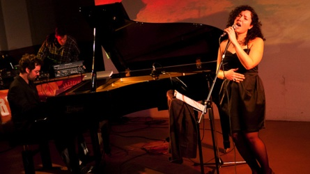

Programm des Track 3 1/2
Unser Motto zu Ehren Benoit B. Mandelbrots (1924-2010): Chaos und Ordnung
- 13:00: Einlass / 14 c.t.: Eröffnung -
Raum Schiff Erde 2011 - Ordnung und Chaos von Matthias Müller-Prove
- RSE11 Intro-Slides und 7' auf podcampus
- edge: Benoit Mandelbrot 1924-2010
- Last Lights On - Mandelbrot fractal zoom to 6.066 e228 (2^760) 15' video
- 14:30 -
Folk theories about space for folks on ships by Dannie Jost
Clouds are not spheres, theories are not truth, folks are not rational. Clouds look like spheres, theories are confusing, and folks are driven by rationality... Chaos and order represent our efforts of trying to make sense of it all. Along the way we discover, and we invent.
The idea is to present a perspective of what folk theories are and how we make use of them to navigate the incompleteness of our understanding of the universe. It is an intellectual adventure, but is it fractal?
- 15:15 -
The New Scarcity by Jeremy Abbett
Moore's Law foresaw the evolution of computing, which in turn, created accessibility for the many. But with accessibility comes choice. And with choice fragmentation. As information multiplies we need to explore alternative ways of staying on top of what truly matters.
- 15:45: Pause / 16:15 -
Fab Labs – Mehr als nur Orte für digitale Fertigung von Axel Sylvester
FabLabs sind für jeden offene Werkstätten, die aber über Heimwerken und über einzelne Gewerke (Metallwerkstatt oder Holzwerkstatt oder Schneiderei etc.) herausgehen. Möglich ist das unter anderem, da in FabLabs computergesteuerte Maschinen (Lasercutter, CNC Fräsen, 3D Drucker, Strick- und Nähmaschinen usw.) eingesetzt werden, mit denen sehr vielfältige Materialien bearbeitet werden können. Es ist also viel wahrscheinlicher, dass Leute mit ganz unterschiedlichem Background hier zusammenfinden und Dinge erstellen. Da heutzutage mit Arduino und Co auch Elektronik Basteleien einfacher und professioneller geworden sind entstehen oft auch interaktive oder elektronisch gesteuerte Gegenstände. Es geht also um so was wie Hightech-Eigenproduktion, Ideenumsetzung und auch Lernen und Bildung.
- 16:35 -
OHANDA von Jürgen Neumann
The Open Hardware and Design Alliance (OHANDA) is an approach to label Open Source Hardware to make it visible as a commons shared resource. The proposed solution with OHANDA is a label in the sense of a trademark. The label will allow the developer to connect a copyleft license with any kind of physical device through OHANDA. Ready to register?
- 16:55 -
Hell yeah, it's rocket science! von Karsten Becker
The Part-Time Scientists are a bunch of guys who are working on accomplishing an unmanned mission to the moon.
As an official team on the Google Lunar X-Prize, we're going to send a rover to the moon and transmit HD images and videos back to earth. In the past 18 months, we have built several rover prototypes, some of which are already able to drive. We do rocket science, and we love it!
If you're interested in what we're doing, join us on Facebook!
- 17:25: Pause / 17:55 -
Tangible und Embodied Interaction von Tanja Döring
Maus, Tastatur und Grafisches User Interface waren gestern! Aktuell gibt es eine Reihe von Forschungsansätzen für neue Interaktionsformen, die ein ausgewogenes Verhältnis von Gegenständlichem und Digitalem, von Körperlichem und Abstraktem im Fokus haben. „Tangible und Embodied Interaction“ bezeichnet ein seit zwei Jahrzehnten wachsendes Forschungsfeld, dem seit fünf Jahren eine eigene Konferenz mit Beiträgen aus Informatik, Kunst, Design und Architektur gewidmet wird: tei-conf.org. Ein Bericht über Ursprünge, Konzepte und Prototypen des Feldes.
- 18:25 -
Concepts of IT-Based Modern Living von Matthias Vogt
Was bedeutet das Konzept Heimat für na(t)ive digitale Bewohner urbaner Räume? Von Nachbarschaft über Aufbau von smart Environments bis hin zum Schnellentwurf physikalischer Manifestation von Elementen zur nahtlosen Interaktion. Und was sonst noch cool ist.
- 18:55 -
Artist in Transit by Benjamin Rabe and Jan Krutisch
With the advent of powerful and tangible computers at the size of a mobile phone, creatives all over the world have started to use their in-between-time to create paintings, music and movies while commuting. they steady moments while in motion, thus defining a new form of urban mobile art. art created like that has made in into worldwide art shows and music channels so far. we will try and shed a light on this new way of creating in-between.
- 19:30 -

Musikalisches Nachspiel von Judith Tellado
- Ende gegen 20:30 -
Sonntag-Nacht:
Tower Bar im Hotel Hafen Hamburg an den Landungsbrücken
Startseite RSE11Mediathek RSE10 Impressum
RSE11 Programm Referenten Teilnehmer Resonanz Bilder Anreise Über uns